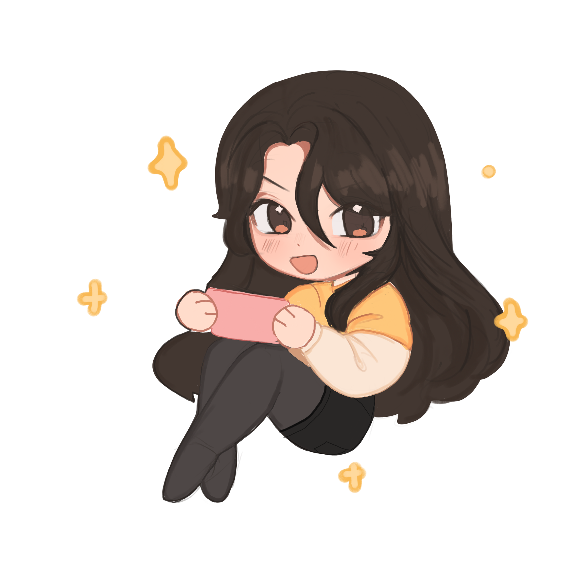

This is my website where I showcase a little bit about myself and my work!
A little bit about the design of the website. I had created and used old art for most of the webpage. For example the header of the website is something I designed specifically for use on it! I also drew the image above as a little icon of myself. In the portfolio section I used a lot of past artwork I had made and some recent artwork that I had made this year. The logo is something I had drawn for a class and it features my instagram handle. There isn't a specific color palette used, but I mostly wanted to keep the website minimal and pastel. I used a lot of light blues, pinks, and whites mainly. In the future I will definitely use this website again and repurpose many of its elements. I would like to add some embellishments such as stars or flowers to give the website a more unique taste.
For the header, I have always loved anything star or moon related since I'm a huge Sailor Moon fan. I wanted to incorporate as many elements of stars and the sky for my main thematic. I also wanted to add an accent to the overall blue/white palette, and I opted to go with pink. These took the form of flowers which I thought was a nice touch since it would be able to be added without making the entirer header too cluttered. It also went well with my logo design which features pink flowers. I hope you enjoy your stay!